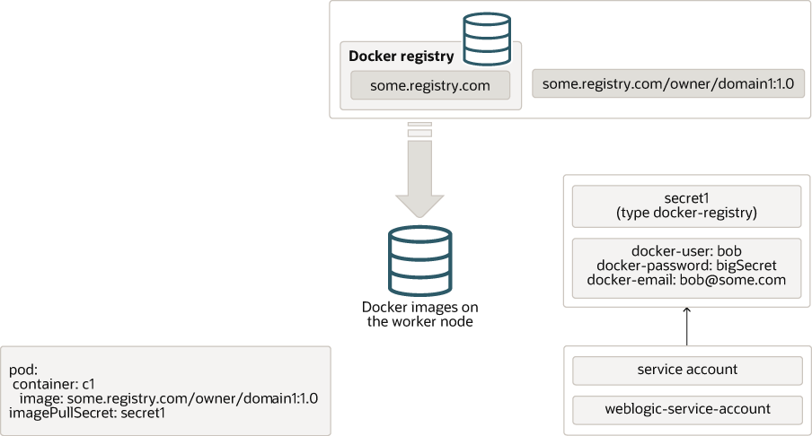

ドメインが起動せず、
ImagePullBackoffやCannot pull imageなどのエラーが表示される
このようなエラーが表示された場合は、Kubernetesでコンテナ・イメージを検出できないことを意味します。 一般的な原因は以下のとおりです。
image値が正しく設定されていません。つまり、Kubernetesは間違ったイメージをプルしようとします。imagePullSecretなどで必要な資格証明を使用してKubernetesを構成していません。kubeletが実行されておらず、Kubernetesがイメージを表示できないマシンにイメージを構築しました。つまり、イメージをワーカー・ノードにコピーするか、すべてのワーカー・ノードからアクセス可能なコンテナ・レジストリに配置する必要があります。Kubernetesがポッドを起動したときに何が起こるかを確認します。

ポッドの定義には、コンテナ仕様のリストが含まれます。 各コンテナ仕様には、そのコンテナの実行に使用するイメージの名前(およびオプションでタグ)が含まれます。 前述の例には、コンテナ・イメージsome.registry.com/owner/domain1:1.0を使用するように構成されたc1というコンテナがあります。 このイメージ名の形式はregistry address / owner / name : tagであるため、この場合、レジストリはsome.registry.com、所有者はowner、イメージ名はdomain、タグは1.0です。 タグはバージョン番号とよく似ていますが、番号である必要はなく、特定の順序や形式である必要もありません。 タグを省略すると、latestとみなされます。
タグlatestが混乱しています - 実際には、レジストリで作成または公開されたイメージの最新バージョンを意味するのではなく、所有者がlatestを呼び出すことを決定したバージョンを意味するだけです。 DockerおよびKubernetesでは、最新のものを想定しているため、通常は使用せずに、実際のバージョンまたはタグを指定することをお薦めします。
まず、Kubernetesは、ポッドがスケジュールされているワーカー・ノードのローカル・コンテナ・イメージ・ストアで、リクエストされたイメージが使用可能かどうかを確認します。 存在する場合は、そのイメージを使用してコンテナを起動します。 存在しない場合、Kubernetesはリモート・コンテナ・レジストリからイメージをプルしようとします。
イメージがローカル・コンテナ・イメージ・ストアにすでに存在する場合でも、Kubernetesに常にイメージをプルさせるために使用できるimagePullPolicyと呼ばれる別の設定があります。
イメージがリモート・レジストリで使用可能で、パブリックである場合、つまり認証を必要としない場合、Kubernetesはイメージをローカル・コンテナ・イメージ・ストアにプルし、コンテナを起動します。
リモート・コンテナ・レジストリで認証が必要な場合は、Kubernetes docker-registryシークレットに認証の詳細を指定し、イメージのプル時にそのシークレットを使用するようにKubernetesに指示する必要があります。
シークレットを作成するには、次のコマンドを使用できます:
kubectl create secret docker-registry secret1 \
--docker-server=some.registry.com \
--docker-username=bob \
--docker-password=bigSecret \
--docker-email=bob@some.com \
--namespace=default
このコマンドでは、secret1をシークレットの名前に置き換えます。docker-serverは、https://プレフィクスなしでレジストリ名に設定されます。docker-username、docker-passwordおよびdocker-emailは、リモート・コンテナ・レジストリの認証に使用する資格証明と一致するように設定されます。namespaceは、意図したイメージを使用するネームスペースに設定する必要があります。
一部のレジストリでは、docker-serverをsome.registry.com/v2などにするサフィクスが必要な場合があります。 これが必要かどうかを判断するには、レジストリ・プロバイダのドキュメントを確認する必要があります。
シークレットを作成したら、それを使用するようにKubernetesに指示する必要があります。 これを行うには、Kubernetes YAMLファイルにimagePullSecretを追加します。 WebLogicドメインの場合、シークレット名をドメイン・カスタム・リソースYAMLファイルのimagePullSecretに追加します。
前述のimagePullSecretが指定されたドメイン・カスタム・リソース・ファイルの一部の例を次に示します:
apiVersion: "weblogic.oracle/v8"
kind: Domain
metadata:
name: domain1
namespace: default
labels:
weblogic.domainUID: domain1
spec:
domainHome: /u01/oracle/user_projects/domains/domain1
domainHomeSourceType: Image
image: "some.registry.com/owner/domain1:1.0"
imagePullPolicy: "IfNotPresent"
imagePullSecrets:
- name: secret1
または、ポッドの実行に使用されるサービス・アカウントにシークレットを関連付けることもできます。 これを行う場合、imagePullSecretをドメイン・リソースに追加する必要はありません。 これは、同じネームスペースで複数のドメインを実行している場合に便利です。
前述のシークレットをweblogicネームスペースのdefaultサービス・アカウントに追加するには、次のようなコマンドを使用します:
kubectl patch serviceaccount default \
-n weblogic \
-p '{"imagePullSecrets": [{"name": "secret1"}]}'
複数のリモート・コンテナ・レジストリからコンテナ・イメージをプルする必要がある場合、またはイメージに異なる認証資格証明が必要な場合は、複数のimagePullSecretsを指定できます。 詳細は、「コンテナ・イメージ保護」を参照してください。
リモート・リポジトリにコピーするイメージがローカル・リポジトリにある場合、Dockerのステップは次のとおりです:
docker login some.registry.com -u username -p password
docker tag domain1:1.0 some.registry.com/owner/domain1:1.0
docker push some.registry.com/owner/domain1:1.0
リモート・コンテナ・レジストリを使用できない場合(たとえば、Kubernetesクラスタが外部アクセスのないセキュアなネットワークにある場合)、かわりにコンテナ・イメージをクラスタに手動でコピーできます。
イメージを作成したマシンで、次のコマンドを使用してTARファイルにエクスポートします:
docker save domain1:1.0 > domain1.tar
次に、そのTARファイルをKubernetesクラスタ内の各ワーカー・ノードにコピーし、各ノードで次のコマンドを実行します:
docker load < domain1.tar
すべてのワーカー・ノードでイメージがアクセス可能であることを確認した後、Kubernetesがイメージのプルを再試行するようにポッドを再起動する必要がある場合があります。 これを行うには、ポッド自体を削除するか、ドメインを削除してから再作成します。